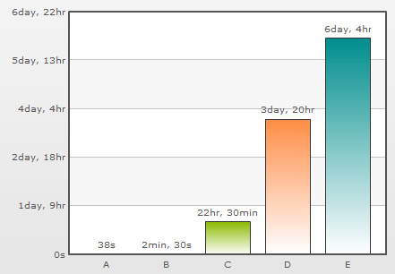

Recursive number scaling comes into the picture when you have number scales defined for your chart.It helps you to understand the chart data better by breaking-up the predefined number scale into smaller sections. For example, in a chart where time is being plotted, you can display 3.87 days as 3 days, 20 hours, 52 minutes and 25 seconds.
Let us jump to an example straightaway to understand this better.
Let us build a chart which indicates the time taken by a list of automated processes. Each process in the list can take time ranging from a few seconds to few days. And we have the data for each process in seconds itself. Now, if we were to show all the data on the chart in seconds only, it will not appear too legible. What we can do is build a scale indicating time and then specify it to the chart. This scale will look something as under:
60 seconds = 1 minute
60 minute = 1 hr
24 hrs = 1 day
7 days = 1 week
We can define the same in our chart using:
<chart defaultNumberScale='s' numberScaleValue='60,60,24,7' numberScaleUnit='min,hr,day,wk' ... >
Please see the Number Scaling page for more details on how to build a number scale. Now let us consider the XML/JSON below:
<chart defaultNumberScale='s' numberScaleValue='60,60,24,7' numberScaleUnit='min,hr,day,wk'> <set label='A' value='38' /> <set label='B' value='150' /> <set label='C' value='81050' /> <set label='D' value='334345' /> <set label='E' value='534345' /> </chart>
{
"chart": {
"defaultnumberscale": "s",
"numberscalevalue": "60,60,24,7",
"numberscaleunit": "min,hr,day,wk"
},
"data": [
{
"label": "A",
"value": "38"
},
{
"label": "B",
"value": "150"
},
{
"label": "C",
"value": "81050"
},
{
"label": "D",
"value": "334345"
},
{
"label": "E",
"value": "534345"
}
]
}
Notice how 22.51 hours is converted to 22 hrs, 30 mins and 50 s; 3.87 days to 3 days, 20 hrs, 52 mins and 25 s. This chart makes use of recursive number scaling and after converting the time in seconds to say hours, whatever is left over is not converted into decimals and shown. It is rather converted into smaller units of time and broken down as far as possible - so the remaining seconds are first converted to minutes and then when the seconds are too few to be converted into minutes, they are displayed in seconds itself. This gives us a fair idea of how much time was used for each task.
To use recursive number scaling, all you have to do is set <chart ... scaleRecursively='1' .. >.
The entire XML/JSON for the chart above is:
<chart defaultNumberScale='s' numberScaleValue='60,60,24,7' numberScaleUnit='min,hr,day,wk' scaleRecursively='1'>
<set label='A' value='38' />
<set label='B' value='150' />
<set label='C' value='81050' />
<set label='D' value='334345' />
<set label='E' value='534345' />
</chart>
{
"chart": {
"defaultnumberscale": "s",
"numberscalevalue": "60,60,24,7",
"numberscaleunit": "min,hr,day,wk",
"scalerecursively": "1"
},
"data": [
{
"label": "A",
"value": "38"
},
{
"label": "B",
"value": "150"
},
{
"label": "C",
"value": "81050"
},
{
"label": "D",
"value": "334345"
},
{
"label": "E",
"value": "534345"
}
]
}
You can also control the levels of recursion. Suppose in the above chart, instead of 3 days, 20 hrs, 52 mins and 25 s, you are pretty happy with showing 3 day, 20 hrs itself either for space constraints or some other good reason. You can control the levels of recursion for all the numbers on your chart using the maxScaleRecursion attribute. Suppose you want only two levels of recursion, then set <chart ... maxScaleRecursion='2'>. This will convert the above chart to:
Notice how all the numbers on the chart are using a maximum of two time units - the rest have been truncated. When you want all the units of a number to be shown on the chart, you can either omit the maxScaleRecursion attribute or set it to -1.
By default, all the units of a number are separated by a space. You can customize the separator using the scaleSeparator attribute. For example, setting scaleSeparator=', ' will separate each unit with a comma as shown below:

Note:
For Scatter and Bubble charts, xScaleRecursively, xMaxScaleRecursion and xScaleSeparator attributes are used to scale the numbers recursively on the X-Axis. These attributes will work only when the xAxisLabelMode attribute is set to AUTO or MIXED.
To scale the numbers recursively on the Secondary Y-Axis in a Dual Y-Axis chart, the attributes sScaleRecursively, sMaxScaleRecursion and sScaleSeparator are used.